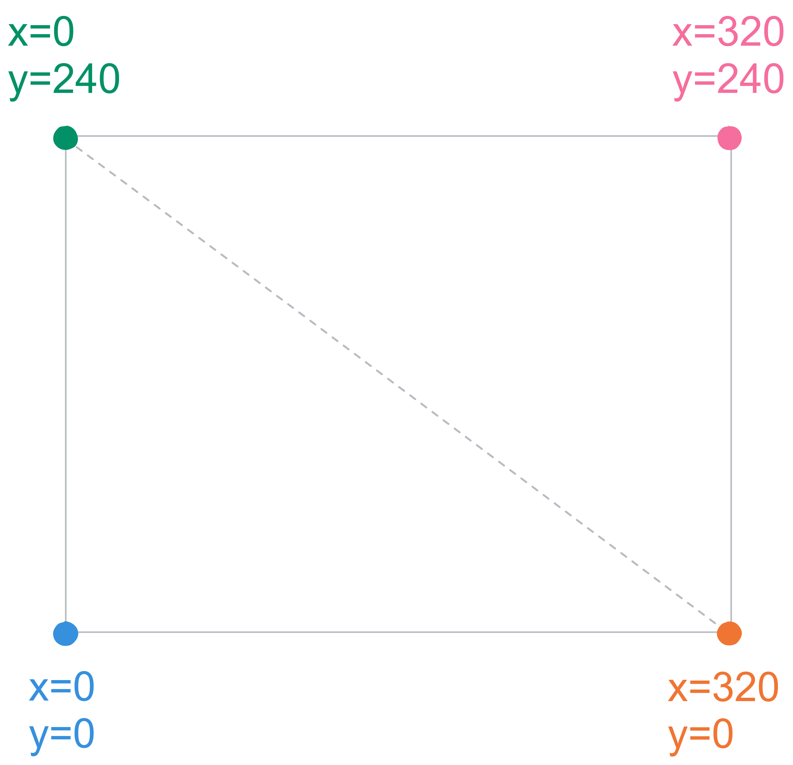
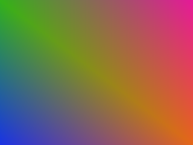
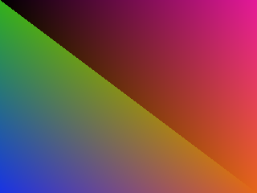
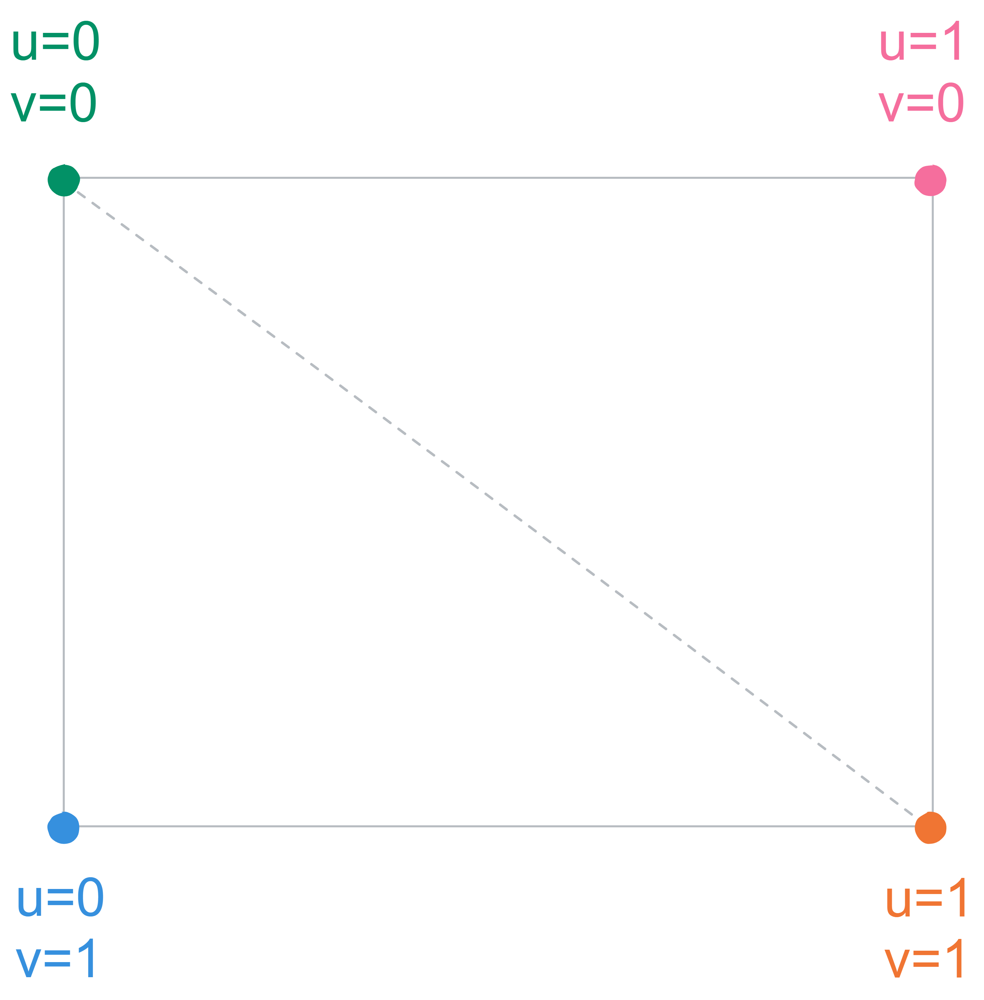
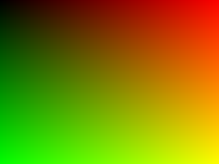
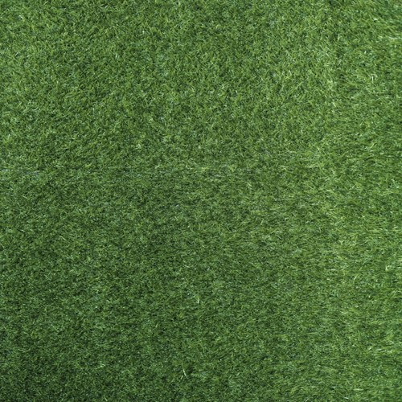
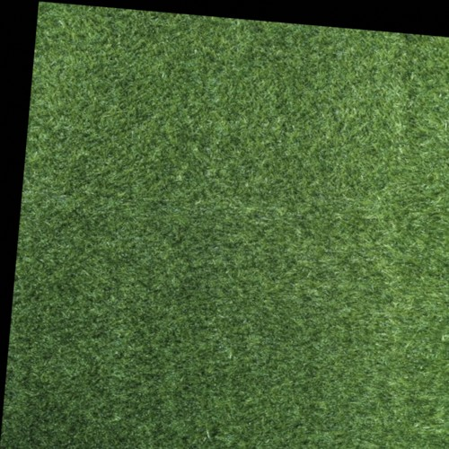
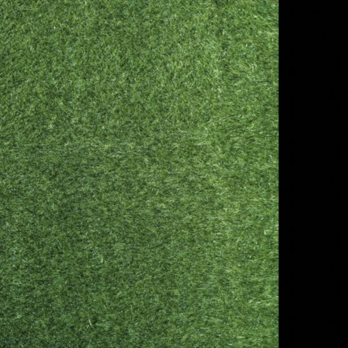

Triangle From Scratch 6: Textures
In the previous article, we interpolated colors between the vertices of a triangle. In this one we're going to interpolate texture coordinates and render an image on a rectangle.
If you're a gamer or a game developer, or a professional, you most definitely already know what a texture is, probably better than me, but to avoid confusion for the non-computer-savvy audience, a texture is just a different name for an image. Many of the professionals I mentioned will, understandably, get mad at me for saying this, because in most libraries, images and textures are separate things. Don't listen to them, though. They're all pictures, just with different properties.
Updating The Trianlges
I think you would agree that a rectangle or a square is a better candidate for displaying images than a triangle is. Let's modify our triangle list to hold two triangles forming a rectangle, or, more generally, a quad. Here's what we're trying to achieve:
We'll use similar vertex colors to what we have in the image above.
# triangle list
tris: list[Triangle] = []
tris.append(Triangle(
v0=Vec2(0, 0),
v1=Vec2(320, 0),
v2=Vec2(0, 240),
v0_col=Vec3(.1, .2, .9), # blue
v1_col=Vec3(.9, .4, .1), # orange
v2_col=Vec3(.2, .7, .1) # green
))
tris.append(Triangle(
v0=Vec2(320, 0),
v1=Vec2(320, 240),
v2=Vec2(0, 240),
v0_col=Vec3(.9, .4, .1), # orange
v1_col=Vec3(.9, .1, .6), # pink
v2_col=Vec3(.2, .7, .1) # green
))This is what we get if we rerun the script:
Pay attention to the comments after the vertex colors, and notice how the two triangles have two common colors (orange and green). You can see this duplication in the vertex positions too. If we provide different colors for any of those shared vertices, we'll get unwanted seams, like the one in the example below.

To understand this duplication better, let's name the corners of the rectangle
v0 through v3.
With this naming, the two triangles we used were v0-v1-v3 and
v1-v2-v3. Notice how they both have v1 and
v3, which is where the repetition comes from.
Sampling
To sample a texture simply means to read a color from a point on that texture. If we want to render a texture onto our triangles, we need to provide them with what we call texture coordinates. Texture coordinates range from (0, 0) to (1, 1), where (0, 0) usually means the bottom left corner (or top left if Y starts from the top), and (1, 1) means the top right corner (or bottom right if Y starts from the top, 😤). We call these normalized coordinates, because they don't care about the actual width and height, but rather, the coordinates of the sample point in proportion to the width and height. This makes our job easier when we use lots of different textures with different sizes.
These normalized coordinates are often called U and V, U being the horizontal component (similar to X), and V being the vertical component (similar to Y). We might refer to UV coordinates as texture coordinates. If we multiply a pair of UV coordinates, which are normalized by definition, by the width and height of a texture, we get the coordinates of the actual point we need to sample the texture at. As an example, consider (0.5, 0.5) as our UV coordinates. If we multiply this with the width and height of a texture, we'll get (width/2, height/2), so we'll sample the texture at the center.
Now, in the nested loops where we pick a color for every pixel in the final image, where do we get our UV coordinates from?
Barycentric Interpolation
Yeah, it's back, again. What graphics developers do is, they embed their UV
coordinates on the vertices of the triangles, and interpolate between them.
The is almost identical to how we interpolated vertex colors, with the
difference that texture coordinates are 2D vectors instead of 3D. It's as if
we say "this vertex needs to sample the texture at the bottom left, this one
needs to sample it at the center, and so on.". Anyhow, let's update our
Triangle class to include texture coordinates for every vertex.
class Triangle:
v0: Vec2
v1: Vec2
v2: Vec2
v0_col: Vec3
v1_col: Vec3
v2_col: Vec3
v0_uv: Vec2
v1_uv: Vec2
v2_uv: Vec2
def __init__(
self,
v0: Vec2,
v1: Vec2,
v2: Vec2,
v0_col: Vec3,
v1_col: Vec3,
v2_col: Vec3,
v0_uv: Vec2,
v1_uv: Vec2,
v2_uv: Vec2
) -> None:
self.v0 = v0
self.v1 = v1
self.v2 = v2
self.v0_col = v0_col
self.v1_col = v1_col
self.v2_col = v2_col
self.v0_uv = v0_uv
self.v1_uv = v1_uv
self.v2_uv = v2_uv
def cart_to_bary(self, p: Vec2) -> Vec3:
return cart_to_bary(p, self.v0, self.v1, self.v2)This is starting to get pretty large and messy. At this point, it makes sense to use tuples of three instead of having three separate variables.
class Triangle:
v: tuple[Vec2, Vec2, Vec2]
v_col: tuple[Vec3, Vec3, Vec3]
v_uv: tuple[Vec2, Vec2, Vec2]
def __init__(
self,
v: tuple[Vec2, Vec2, Vec2],
v_col: tuple[Vec3, Vec3, Vec3],
v_uv: tuple[Vec2, Vec2, Vec2]
) -> None:
self.v = v
self.v_col = v_col
self.v_uv = v_uv
def cart_to_bary(self, p: Vec2) -> Vec3:
return cart_to_bary(p, self.v[0], self.v[1], self.v[2])That's much better. Let's now update the triangle list code block.
# triangle list
tris: list[Triangle] = []
tris.append(Triangle(
v=(
Vec2(0, 0),
Vec2(320, 0),
Vec2(0, 240)
),
v_col=(
Vec3(.1, .2, .9),
Vec3(.9, .4, .1),
Vec3(.2, .7, .1)
),
v_uv=...
))
tris.append(Triangle(
v=(
Vec2(320, 0),
Vec2(320, 240),
Vec2(0, 240)
),
v_col=(
Vec3(.9, .4, .1),
Vec3(.9, .1, .6),
Vec3(.2, .7, .1)
),
v_uv=...
))So, what values do we use for the UV coordinates? It helps to imagine textures as rectangles with the UV coordinates on each corner.
The reason V is flipped is because we're gonna use Pillow for loading textures, which has its vertical component starting from the top, as we saw before. With this, we can finalize the code for the triangle list.
# triangle list
tris: list[Triangle] = []
tris.append(Triangle(
v=(
Vec2(0, 0),
Vec2(320, 0),
Vec2(0, 240)
),
v_col=(
Vec3(.1, .2, .9),
Vec3(.9, .4, .1),
Vec3(.2, .7, .1)
),
v_uv=(
Vec2(0, 1),
Vec2(1, 1),
Vec2(0, 0)
)
))
tris.append(Triangle(
v=(
Vec2(320, 0),
Vec2(320, 240),
Vec2(0, 240)
),
v_col=(
Vec3(.9, .4, .1),
Vec3(.9, .1, .6),
Vec3(.2, .7, .1)
),
v_uv=(
Vec2(1, 1),
Vec2(1, 0),
Vec2(0, 0)
)
))Let's now go back to the nested loops, or the render code. In fact, let's call it the render block. Here's what we had before:
for y in range(HEIGHT):
for x in range(WIDTH):
p = Vec2(x + .5, y + .5)
col = Vec3(.1, .1, .1)
for tri in tris:
bary: Vec3 = tri.cart_to_bary(p)
if bary_is_outside(bary):
continue
col = (Vec3.scalar(bary.x) * tri.v0_col) \
+ (Vec3.scalar(bary.y) * tri.v1_col) \
+ (Vec3.scalar(bary.z) * tri.v2_col)
idx = icoord_to_idx(x, HEIGHT - y - 1, WIDTH)
buf[idx] = col
We'll store the interpolated vertex color in another variable that we'll
ignore for now. We'll also use the new tuple structure in
Triangle instead of v0/1/2_col.
...
for tri in tris:
bary: Vec3 = tri.cart_to_bary(p)
if bary_is_outside(bary):
continue
interp_col = \
(Vec3.scalar(bary.x) * tri.v_col[0]) \
+ (Vec3.scalar(bary.y) * tri.v_col[1]) \
+ (Vec3.scalar(bary.z) * tri.v_col[2])
col = ...
...Let's interpolate the UV coordinates as well.
...
for tri in tris:
bary: Vec3 = tri.cart_to_bary(p)
if bary_is_outside(bary):
continue
interp_col = \
(Vec3.scalar(bary.x) * tri.v_col[0]) \
+ (Vec3.scalar(bary.y) * tri.v_col[1]) \
+ (Vec3.scalar(bary.z) * tri.v_col[2])
interp_uv = \
(Vec2.scalar(bary.x) * tri.v_uv[0]) \
+ (Vec2.scalar(bary.y) * tri.v_uv[1]) \
+ (Vec2.scalar(bary.z) * tri.v_uv[2])
col = ...
...All that's left to do is to sample our texture at the interpolated UV coordinates. Wait, what texture? We don't have a texture! Before we use Pillow to load up a texture, let's visualize our UV coordinates. And, by that, I mean set the final color to (U, V, 0) which will set the red component to U and the green component to V, and leave the blue channel at zero intensity. Let's update the render block now.
for y in range(HEIGHT):
for x in range(WIDTH):
p = Vec2(x + .5, y + .5)
col = Vec3(.1, .1, .1)
for tri in tris:
bary: Vec3 = tri.cart_to_bary(p)
if bary_is_outside(bary):
continue
interp_col = \
(Vec3.scalar(bary.x) * tri.v_col[0]) \
+ (Vec3.scalar(bary.y) * tri.v_col[1]) \
+ (Vec3.scalar(bary.z) * tri.v_col[2])
interp_uv = \
(Vec2.scalar(bary.x) * tri.v_uv[0]) \
+ (Vec2.scalar(bary.y) * tri.v_uv[1]) \
+ (Vec2.scalar(bary.z) * tri.v_uv[2])
col = Vec3(
interp_uv.x,
interp_uv.y,
0
)
idx = icoord_to_idx(x, HEIGHT - y - 1, WIDTH)
buf[idx] = colIf we rerun the script now, we'll get the following image.
Nearest Neighbor
Bilinear
Textures & Sampling
If you're a gamer or a game developer, you most definitely already know what a texture is, probably better than me, but I'm still gonna explain it very briefly to avoid confusion for the non-computer-savvy audience.
Textures are just images. Here's an example:
We can do anything we want with a texture. More specifically, we can "sample" or read colors from any part of the texture in any way we want. We can sample it in a repeating pattern by wrapping our sample point so that it doesn't leave the boundaries.

We can rotate our sample point by 5 degrees counterclockwise, which will make the texture appear rotated by 5 degrees clockwise.
We can offset our sample points to the right, which will make the texture appear as if it moved to the left.
What we did is called software rendering, which uses the CPU to render graphics. It's often significantly slower than hardware rendering, which utilizes the parallelism of a GPU to speed up the process.
Here's the full source code if youre interested.